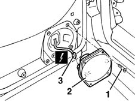

5570T96 rear side speaker - r r
- Path
- Procedures > 55 ELECTRICAL EQUIPMENT > 5570 ACCESSORIES > 5570T CAR RADIO AND CAR TELEPHONE > 5570T96 rear side speaker - r r
- Kind
- repair procedure (removal / refitting; the operation number is the code)
- Applies to
- all engines; all production periods
- Interactive page
- https://sloeber94.github.io/elrnDB-fMltpl/en/#/2891967
Applies to: all engines; all production periods
 Removing
Removing
 Refitting
Refitting7010E30 oddment pouch on one rear side door-r r
1. Undo the bolts.
2. Move the speaker.
3. Disconnect the electrical connection and recover the speaker.
 | Name | Connector |
|---|---|---|
3 | Speaker in rear left door |
| Name | Connector |
|---|---|---|
3 | Speaker in rear right door |

Applies to: all engines; all production periods
Refitting
RemovingCheck that the speaker is not damaged.
Connect the electrical connection.
Position the speaker.
Tighten the bolts.
Check the operation of the speaker.
Topics linked from this page (3)
- 7010E30 oddment pouch on one rear side door-r r
- P40 Speaker in rear left door
- P41 Speaker in rear right door